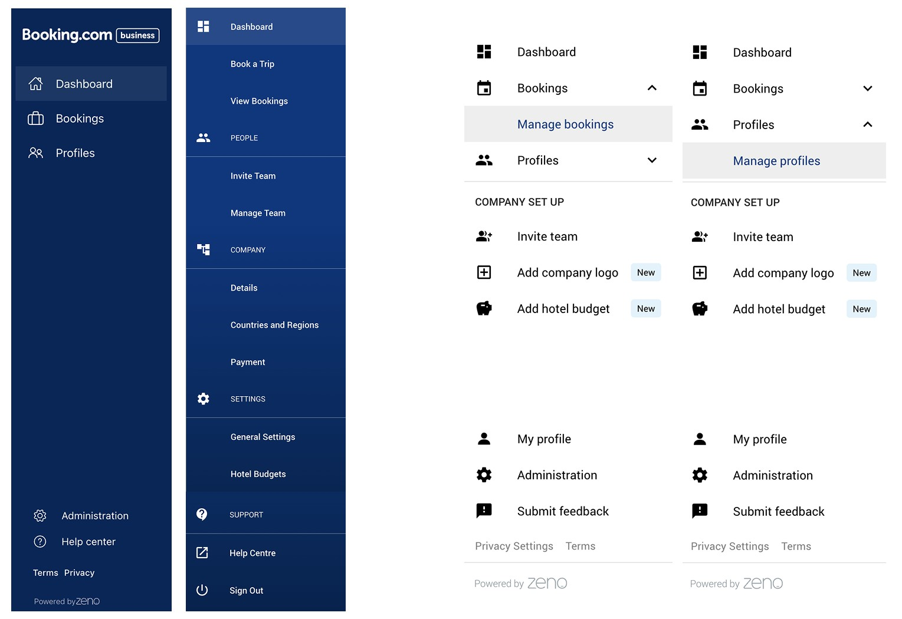
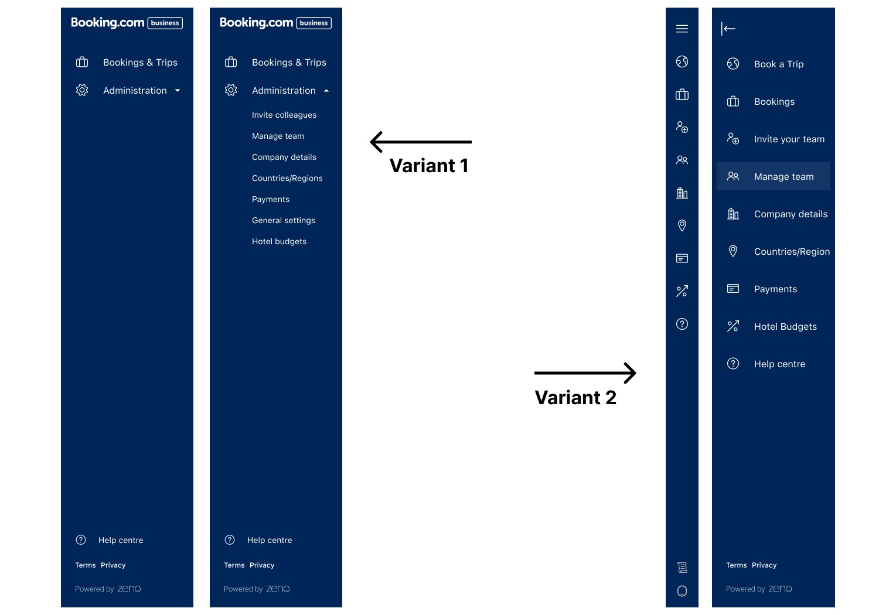
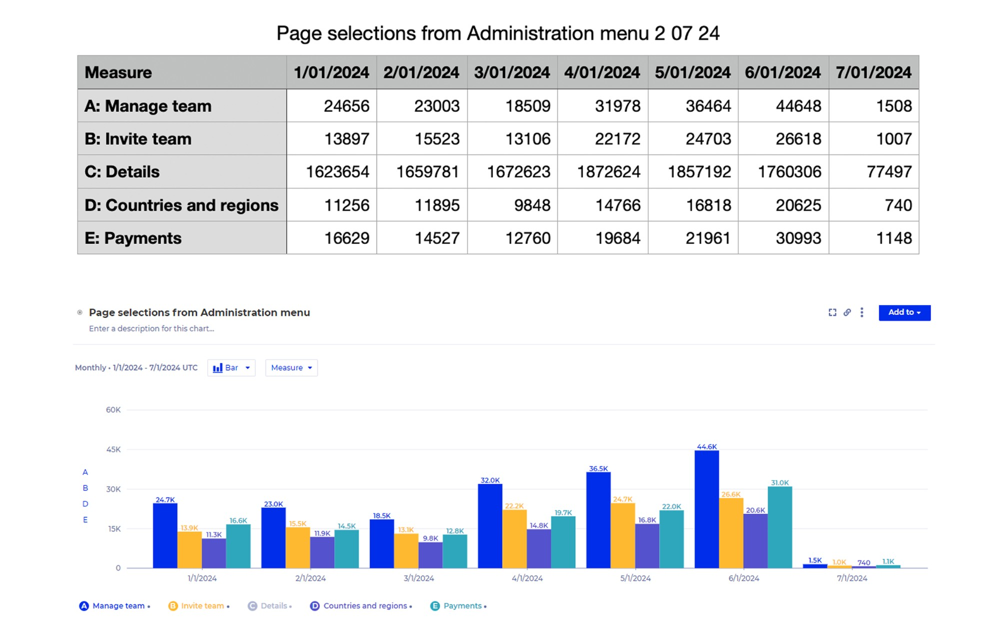
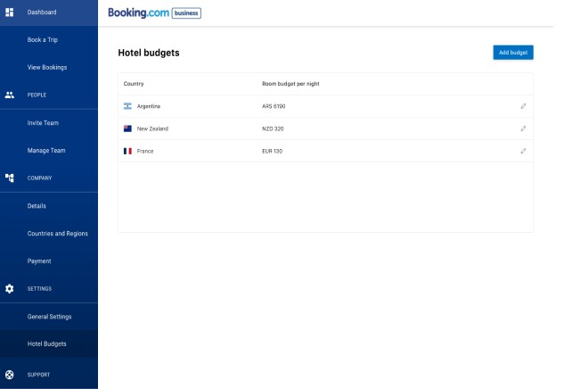
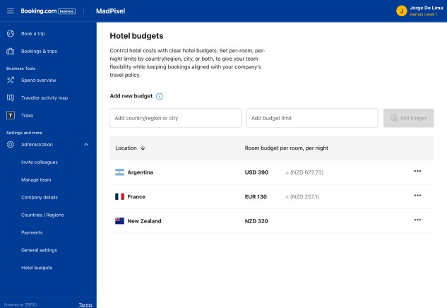
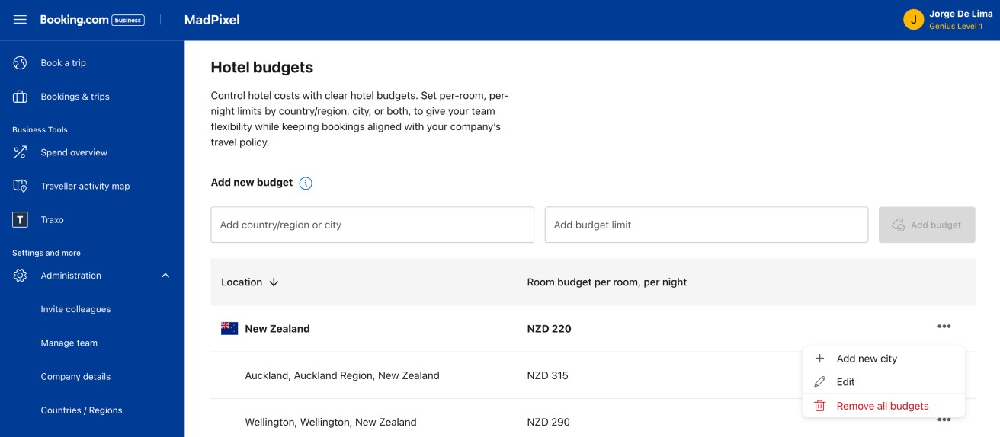

Context & challenge
The same growth data that shaped the registration redesign extended further: accounts with 100+ users generated 156 bookings a month against 2.7 for single-user accounts. Registration got people in the door. Two further questions followed from that same thesis — could admins actually grow their teams once inside, and could they trust the tools that governed spend as those teams scaled.
Role & contribution
Senior Product Designer across both projects, working with Jacqui (Product Manager), James (Product Owner), Lucas (Senior Software Engineer), Chris (Lead Software Engineer), Scott (Lead Researcher), and Keryn (Senior Researcher).
Research & insights
Value hypothesis: if we reduce friction and confusion in admin workflows, admins will successfully invite and manage more colleagues, increasing active users and booking volume per account. Analysis of usage patterns and error logs, plus qualitative sessions with real admin users, surfaced four concrete pain points.


Design strategy & approach
Delivery was phased to manage engineering risk. Release 1 restructured navigation, removed redundant functions, and established a clearer hierarchy — reducing cognitive load before introducing new interactions.
Release 2 redesigns the team and guest management flows themselves: clearer invite flows, better search and filter tools, consistent state and error messaging, aligned with the broader Eos platform system. Interactive prototypes validated micro-interactions before development at each stage.
Results & impact
Release 1 is shipped and live. Post-launch engagement shows uplift across every tracked action.
Worth being precise about what this does and doesn't prove: these are engagement uplifts — a leading indicator that the redesigned navigation is working, not the outcome metric the original hypothesis was built on (active users and booking volume per account). That connection wasn't tracked through to a number.

Research & insights
Admins struggled to visualise budget hierarchy. Policy enforcement felt punitive rather than preventive. A lack of real-time feedback reduced trust in the system.
The insight that reframed the brief: budget tools need to feel like guidance systems, not policing systems.
Strategy & solution
Shifted from list-based configuration to a structured hierarchy visualisation, built on three pillars: transparency, predictability, and real-time contextual feedback.


- Redesigned the budget overview dashboard
- Clarified allocation structures and hierarchies
- Introduced visual indicators for policy constraints
- Improved the interaction patterns for editing and reviewing budgets

Reflection & learnings
Together these extend the B4B story past a single flow: onboarding got people in, team management got them inviting colleagues, budget governance made that growth something admins could trust rather than fight. The budget governance insight — guidance over policing — went on to influence how governance features were introduced elsewhere in the ecosystem.
That said, the evidence trail is uneven and worth stating plainly rather than smoothing over: real numbers for Team Management Release 1, none yet for Budget Governance.